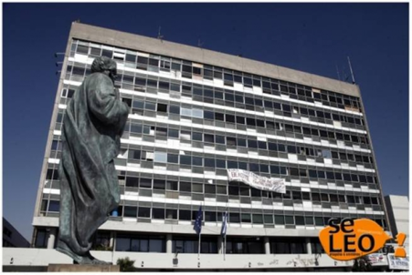

Ημερομηνία: 11 Δεκεμβρίου 2018
Aστυνομική επιχείρηση στο ΑΠΘ: Συνελήθησαν 40 άτομα-Κατασχέθηκαν όπλα και ναρκωτικά!
Συντάκτης: Seleo_newsroom

Μεγάλη αστυνομική επιχείρηση στην οποία συμμετείχαν 200 αστυνομικοί
πραγματοποιήθηκε σήμερα σε χώρους του ΑΠΘ και πέριξ, αλλά και στο ευρύτερο πολεοδομικό συγκρότημα της Θεσσαλονίκης.
Όπως έγινε γνωστό μέχρι στιγμής έχουν συλληφθεί 40 άτομα, εκ των οποίων η πλειοψηφία για συμμετοχή σε εγκληματική οργάνωση διακίνησης -εμπορίας ναρκωτικών ουσιών.
Κατασχέθηκαν μεγάλες ποσότητες κάνναβης και οπλισμός.
Πηγή: https://seleo.gr